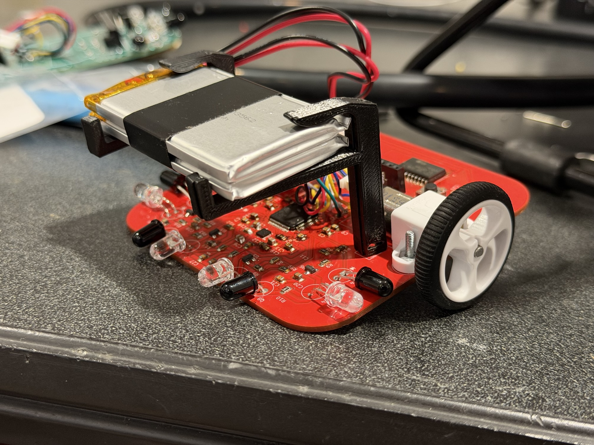
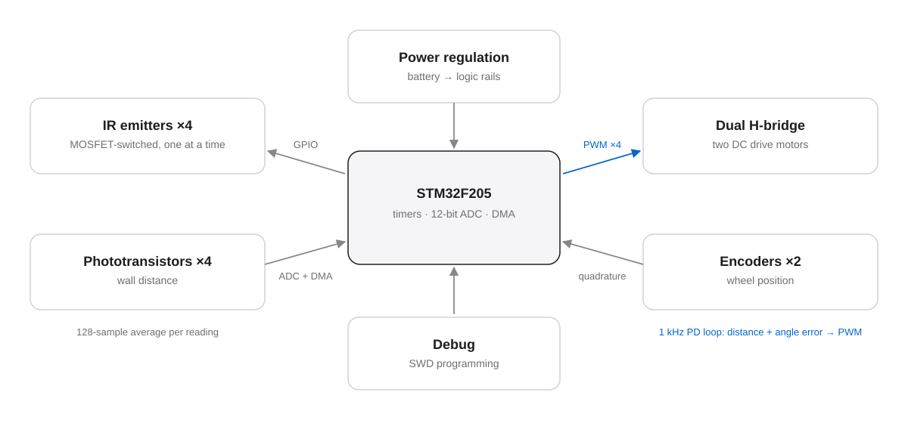
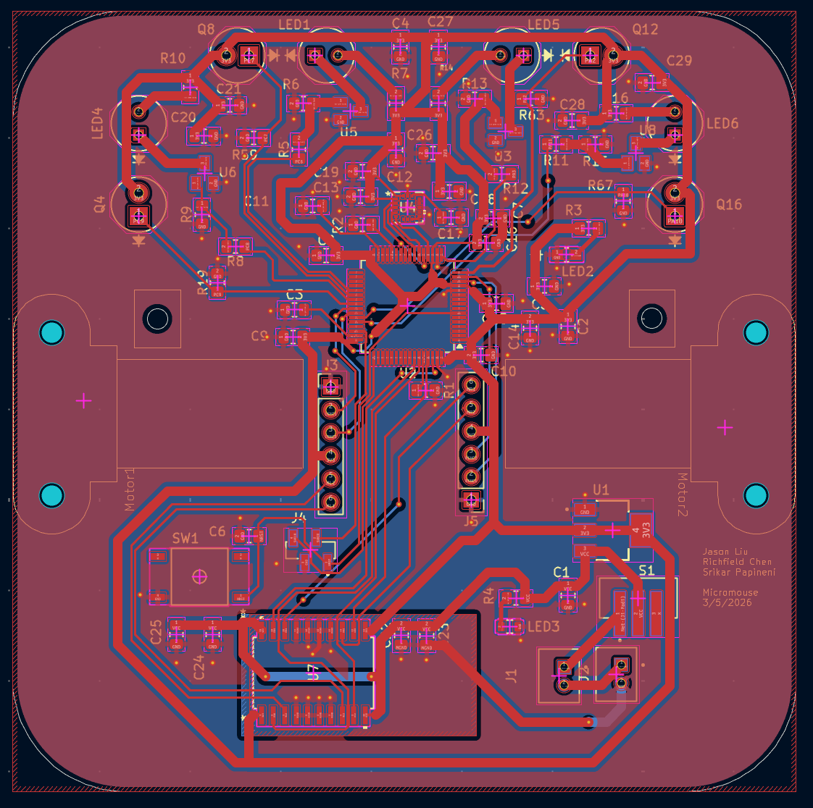
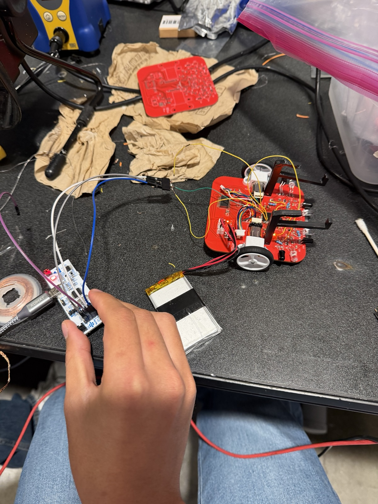

Completed · Sep 2025 – May 2026
Micromouse robot: PCB, motion control, and IR sensing.
A compact robot built around custom electronics, four-direction IR sensing, encoder feedback, and closed-loop motor control.
Outcome. The final robot was assembled and its subsystems worked. We did not validate a full competition maze run, so this page is about the hardware and control work, not maze solving.

Everything on one small board.
A Micromouse has to sense walls, know how far it has traveled, and drive straight and turn precisely. All of that fits on a board about the size of a palm, powered by a small battery.
That puts the MCU, motor drivers, encoders, IR emitters and receivers, power regulation, and debug access in one layout, where motor noise and sensitive analog sensing share the same ground.
One MCU, two control problems.



What I did.
Our three-person team built the robot. My work:
- Designed and assembled the two-layer STM32F205 PCB in KiCad: dual H-bridge motor control, encoder inputs, four-direction IR sensing, power regulation, and debug interfaces.
- Configured STM32 timers for quadrature encoder capture and four-channel motor PWM.
- Implemented a 1 kHz closed-loop PD controller for straight-line motion and 90° turns.
- Implemented time-multiplexed IR sensing with MOSFET-switched emitters, 12-bit ADC acquisition, and DMA averaging over 128 samples per reading.
Small choices that make the sensors trustworthy.
Fire one IR emitter at a time.
Each emitter is switched on by its own MOSFET in sequence, and the phototransistor is given time to respond before sampling. That way each reading comes from one known direction and emitters don’t interfere with each other.
Average in hardware, not in the loop.
DMA collects 128 samples per reading without CPU involvement. The averaged value makes wall detection more stable without taking time from the control loop.
Close the motion loop at 1 kHz.
Encoder counts give distance and angle errors. The PD terms are mixed into left and right motor commands with saturation limits and updated every millisecond.
Tune on a practice kit first.
We tuned PID/PD behavior on a practice kit before the custom board was ready, which separated control tuning from board bring-up.
What was demonstrated.
On the final robot, the PCB, motor drive, encoder capture, and IR sensing were brought up and worked. We have no recorded tracking-error or turn-accuracy data, so this page doesn’t claim any performance numbers.
The video shows the practice kit during PID tuning. It is not the final robot, and it is not a maze solve.
An analog mistake on the final board.
One failure on the final board came from the analog side, not the firmware: the IR sensing path had an incorrect divider value.
The takeaway is that sensor front-end component values need the same review before layout freeze as the code that reads them.
State at the end of the season.
Worked
- Custom PCB assembled and brought up
- Motor PWM, encoder capture, and IR acquisition
Not verified
- A full competition maze run
- Measured tracking and turn accuracy